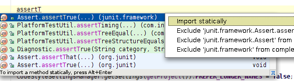

To quickly complete a method call of a static method located anywhere in your project, libraries or JDK, enter a prefix
and press &shortcut:CodeCompletion; twice. You'll see all the matching methods. If you want the method you chose to be imported statically,
press &shortcut:ShowIntentionActions; and see what happens:
